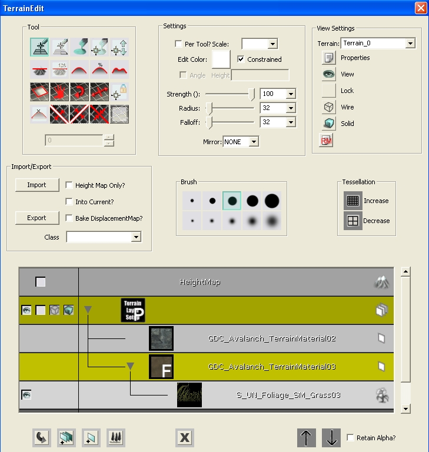
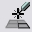
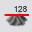
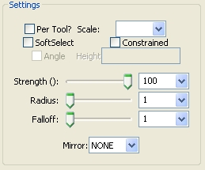
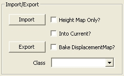
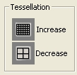
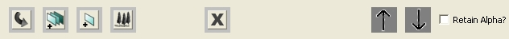

UDN
Search public documentation:
TerrainEditorUserGuideJP
English Translation
中国翻译
한국어
Interested in the Unreal Engine?
Visit the Unreal Technology site.
Looking for jobs and company info?
Check out the Epic games site.
Questions about support via UDN?
Contact the UDN Staff
中国翻译
한국어
Interested in the Unreal Engine?
Visit the Unreal Technology site.
Looking for jobs and company info?
Check out the Epic games site.
Questions about support via UDN?
Contact the UDN Staff
テレイン エディタ ユーザー ガイド
ドキュメントの概要: テレインエディタの使用についてのガイド。 ドキュメントの変更ログ: Scott Sherman により作成と修正。 Richard Nalezynski? により管理。はじめに
UE3では、[テレイン編集]ダイアログを使ってテレインの編集を行います。このダイアログはテレイン編集ツールバーとレイヤブラウザの機能とを、ひとつのダイアログにまとめたもので、このダイアログはテレイン作業のほとんどの場合に表示されます。テレインエディタを開く
テレイン エディタは、ツールバーの 'Terrain Edit Mode (テレイン エディタ モード)' に切り替えることにより開くことができます。
テレインエディタ レイアウト
こちらがそのダイアログのスクリーンショットです:
図1: テレイン編集ダイアログ
| 1 | ツール? |
| 2 | 設定? |
| 3 | 設定を見る? |
| 4 | インポート/エクスポート? |
| 5 | ブラシ? |
| 6 | テッセレーション? |
| 7 | ブラウザ ウィンドウ? |
| 8 | 下部列 ボタン? |
ツール
次のイメージは、編集ダイアログの「ツール」セクションです。:
図2: ツール ブロック 次のツールがサポートされています（図中のアイコンに左から右、上から下の順で対応）:
セクタの追加と削除
このツールは、あらゆる方向に存在するテレインに、セクタの追加/削除をします。またこのツールは、 MaxTesselationLevel パッチの追加/削除に限定されています。カーソルは、追加/削除にパッチのサイズを移動しなければなりません。 [CTRL] + [左] クリックで、セクタの追加が始まり、[CTRL] + [右]クリックでセクタの削除を始めます。ボタンをホールドしたりドラッグすることは、追加/削除されるパッチのアウトラインをオーバーレイします。追加されたパッチは緑のオーバーレイで表示され、削除されたパッチは赤で表示されます。ボタンを解放すると、パッチは追加/削除され、必要があれば、差異を補正するため、テレインの位置がオフセットされます。
ポリゴンの追加と削除

このツールは現在サポートされておりません。
ペイント

これを選択すると、[Ctrl]＋[左] ボタンをホールドすると、テレイン上の選択されているレイヤをペイントします。「ペイントをしない」には [Ctrl]＋[右] ボタンを押します。 ハイトマップがレイヤ ブラウザで選択された状態では、[Ctrl]＋[左] ボタンでテレインの高さを引き上げ、 [Ctrl]＋[右] で引き下げます。 テレインにわたってペイントすることは、個別のテレインのエッジを正しく一致することを可能にするためサポートされています
頂点のペイント

これを選択時、ツールは、直接頂点を選択できるようにし、頂点を上や下に動かしたり、エディタで、静的メッシュを伴ったテレインのエッジを容易に一致できるようにします。頂点を選択するには、[CTRL] + [左]クリックをしてください。また、非選択にするには、 [CTRL] + [右]クリックをしてください。選択/非選択の動作は、加法演算です。選択している頂点すべてをクリアするには、 [CTRL] + [ALT] + [SHIFT] + [右]クリックしてください。 選択した頂点を移動するには、 [CTRL] + [ALT] + [SHIFT] + [左]クリックして、マウスを上や下に移動してください。 設定ボックスの「SoftSelect」 (ソフト選択オプション) がチェックされている場合は、 頂点選択/非選択が、ツールの中心円内で 100% になり、フォールオフ半径内の頂点は、最小から最大半径でウェイトが縮小時に選択されます。100% で選択された頂点は、白い球体を表示し、ウェイトが 0 に落ちるのと同様に、黒色にフェードしています。 SoftSelect が選択されていない場合は、 円のツールを含んだ頂点が選択されます(例：円のツールの周りの正方形は、100% で選択されます)。 「強度」設定は、 選択された頂点ウェイトと、編集時の頂点を移動するマウス移動合計で増加します。
マニュアル編集

このツールは現在サポートされておりません。
平板化

このツールは、ハイトマップが選択された状態でテレインを [Ctrl]＋[左] ボタンをクリックした時のテレインの高さにあわせて平板化します。 設定セクションにある「角度」 ボックスがチェックされている場合、テレインは、 [CTRL] + [左]クリック時に決定された角度に平板化されます。 「角度」 ボックスのチェックがはずされると、「高さ」 ボックスに値が表示され、テレインは、提供された値に平板化されます。
値を指定して平板化

このツールは現在サポートされておりません。上記で記した「高さ」 設定入力により機能が提供されます。将来的に削除される予定です。
スムーズ

このツールは、中心点をクリックしてテレインをスムーズ化します。 ハイトマップが選択された状態では、このハイトマップに揃えて処理します。また、レイヤが選択されている場合は、アルファマップの値をスムーズ化します。
平均化

このツールは、関連するすべてのポイントを平均値に設定します。
ノイズ

このツールは、選択されたレイヤやハイトマップにノイズを挿入します。
ビジビリティ

このツールは、[CTRL] + [左]をクリック時、テレインに穴をペイントします。; [CTRL] + [右]をクリックすると、その穴が削除されます。このツールは、テレインからディティールが削除されたときに、穴が消失してしまうのを防ぐため、MaxTesselationLevel に制約されています。
テクスチャ パン
このツールは、[CTRL] + [左]をクリックし、マウスをドラッグすると、ブラウザウィンドウで選択されているテレインマテリアルのテクスチャをパンします。 (注記: 現在、この変更は、遅いテレインマテリアルに再コンパイルが必要なため、適切にプロパゲートされていません。テレインマテリアル「プロパティ」ウィンドウのプロパティ ウィンドウに直接値を設定することは、それらの値変更に推奨されているメソッドです。)
テクスチャ 回転
このツールは、[CTRL] + [左]をクリックし、マウスをドラッグすると、ブラウザ ウィンドウで選択しているテレインマ テリアルのテクスチャを回転します。 (注記: 現在、この変更は、遅いテレインマテリアルに再コンパイルが必要なため、適切にプロパゲートされていません。テレインマテリアル「プロパティ」ウィンドウのプロパティ ウィンドウに直接値を設定することは、それらの値変更に推奨されているメソッドです。)
テクスチャ スケール

このツールは、[CTRL] + [左]をクリックし、マウスをドラッグすると、ブラウザ ウィンドウで選択しているテレインマ テリアルのテクスチャをスケールします。 (注記: 現在、この変更は、遅いテレインマテリアルに再コンパイルが必要なため、適切にプロパゲートされていません。テレインマテリアル「プロパティ」ウィンドウのプロパティ ウィンドウに直接値を設定することは、それらの値変更に推奨されているメソッドです。)
頂点をロック

このツールは現在サポートされておりません。
到達不可をマーク

このツールは現在サポートされておりません。 (注記: 現在、この変更は、遅いテレインマテリアルに再コンパイルが必要なため、適切にプロパゲートされていません。テレインマテリアル「プロパティ」ウィンドウのプロパティ ウィンドウに直接値を設定することは、それらの値変更に推奨されているメソッドです。)
テレイン X の分割
このツールは、 X 軸上で選択されているテレインを分割します。有効時、黄色い線は分割が発生する場所をレンダリングします。 [CTRL] + [左]クリックで、分割をします。
テレイン Y の分割

このツールは、 Y 軸上で選択されているテレインを分割します。有効時、黄色い線は分割が発生する場所をレンダリングします。 [CTRL] + [左]クリックで、分割をします。
テレインをマージ

このツールは、互いによく調和する隣接した 2 つのテレインをマージします。有効時、黄色い線は分割が発生する場所をレンダリングします。マージが可能でない場合は、実線は表示されません。[CTRL] + [左]クリックで、分割をします。
座標の反転

このツールは、テレインパッチの境界座標を反転します。 [CTRL] + [左]クリックで境界を反対側のデフォルトの座標に反転します。 境界の反転は、テッセレーションレベルが最高になっている場合にのみ有効であることに注意してください。
設定
下記は、ツール設定操作のイメージです。
図 3: ツール設定ブロック
Per-Tool? (ツールごと? )チェックボックス
これがチェックされると、現在アクティブになっているツールのみに設定が適用されます。スケール コンボ
現在使用されていません。SoftSelect (ソフト選択) チェックボックス
これがチェックされると、頂点 ペイント/編集 ツールは、頂点のソフト選択を使用します。Constrained (制約) チェックボックス
これがチェックされ、テレイン EditorTessellationLevel が 0 以上に設定されると、設定テッセレーションでの頂点のみが編集されます。よりディティールな頂点は、編集された隣接するものにより決定された平面に一致するよう自動的に設定されます。角度 チェックボックス
この操作は、平板化ツールがアクティブ時にのみ有効です。これがチェックされると、平板化ツールは、アクティブ時に決定された角度を使用します。高さテキストボックス
この操作は、平板化ツールがアクティブ時にのみ有効です。角度オプションのチェックがはずされると、このボックスに値が表示され、平板化ツールは平板化するためこの値を使用します。スライダ/コンボ ペア
次の各ブラシ設定には、スライダ/コンボ ペアがあります。:- Strength (強度)
- Radius (半径)
- Falloff (フォールオフ)
ミラーコンボ
このコンボでは、特定のテレインツールのアプリケーション用のミラーリングモードを選択することができます。ツールがミラーリングをサポート時、紫色の２番目のツールカーソルは、ミラーされた位置に表示されます。ミラーコンボは次のオプションを含んでいます。:| フラグ | 解説 |
|---|---|
| なし | ツールをミラーしない |
| X | X 軸でミラー |
| Y | Y 軸でミラー |
| XY | X 軸と Y 軸でミラー |
ビューの設定
次の図はテレインに関連した [ビューの設定] です。。図4: ビューの設定ブロック
Terrain(テレイン)コンボ
現存するすべてのテレインアクタから編集するテレインの選択を行います。Properties (プロパティ) ボタン
これが押されていると、現在選択されているテレインについてのプロパティのウィンドウが出てきます。View (ビュー) ボタン
「目のマーク」がある場合、テレインはビューに入っています。クリックすると、ボタンが「空」アイコンに代わり、テレインがレベルに隠されます。Lock (ロック) ボタン
「空」アイコンがある場合、テレインは編集できます。クリックすると、ボタンが南京錠型アイコンに変わり、テレインは編集コマンドを「一切」受け付けなくなります。Wire (ワイヤー) ボタン
の時点ではまだ装備されていませんSolid (ソリッド) ボタン
今の時点ではまだ装備されていません。マテリアルボタンの再コンパイル
このボタンが押されると、カレントのテレインに適用したシェーダすべてが再コンパイルされます。インポート/エクスポート
次のイメージは、テレインに関連した Import/Export コントロールです。
図 5: インポート/エクスポート ブロック
インポート ボタン
ハイトマップ (16-ビットBMP ファイルから)、 レイヤーアルファマップ (16-ビットBMP ファイルから)、テレイン (T3D ファイルから)のインポートを可能にします。 ハイトマップをインポートするには、「HeightMap Only?」(ハイトマップのみ?)オプションを必ずチェックし、ハイトマップをテレインブラウザで選択しなければいけません。 アルファマップをインポートするには、「HeightMap Only?」(ハイトマップのみ?) および「Into Current?」(カレント内に?) オプションを必ずチェックし、テレインレイヤをテレインブラウザで選択しなければいけません。エクスポートボタン
ハイトマップ (16-ビットBMP へ)、またはテレイン (T3D ファイルへ)のエクスポートを可能にします。 ハイトマップをエクスポートするには、「HeightMap Only?」(ハイトマップのみ?)オプションを必ずチェックし、ハイトマップをテレインブラウザで選択しなければいけません。 アルファマップをエクスポートするには、「HeightMap Only?」(ハイトマップのみ?) および「Into Current?」(カレント内に?) オプションを必ずチェックし、テレインレイヤをテレインブラウザで選択しなければいけません。Height Map Only? checkbox
これがチェックされ、 「Import/Export」ボタンが押されると、 「ハイトマップのみ?」が実行されます。レイヤがテレインブラウザウィンドウで選択し、このチェックボックスを押すと、アルファマップがインポート/エクスポートされます。「Into Current?」(カレント内に?) チェックボックス
‘Height Map Only? (ハイトマップのみ？)’ チェックボックスとともにチェックすると、インポート ボタンを押したときに、View Setting Terrain (ビュー設定テレイン) コンボ ボックスでその時に選択されているテレインにハイトマップがインポートされます。 備考: インポートされたハイトマップは、インポート先のテレインの規模とマッチしなければ行けません。そうでないと、操作は失敗してしまいます。Bake DisplacementMap (変異マップを焼く) チェックボックス
このツールは現在サポートされておりません。Class (クラス) コンボボックス
ハイトマップをインポート/エクスポート時、ファクトリの使用を決定します。ブラシ
下記の図は、テレインに関連したブラシ選択のコントロールのイメージです。
図 6: ブラシブロック このコントロールのブロックは、プレセットのブラシサイズの選択を可能にします。カスタム値を設定するためスライダーを使用する場合は、ブラシの１つを右クリックし、その値をブラシボタンに格納します。ブラシ上でマウスのカーソルをホールドすることでツールヒントのウィンドウで格納された設定を表示します。
テッセレーション
下記の図は、テッセレーションコントロールのイメージです。
図 7: テッセレーション コントロールブロック
Increase Button (増加ボタン)
このボタンは、カレントのテレインの最大テッセレーションを増加します。Decrease Button (減少ボタン)
現在実装されておりません。ブラウザ ウィンドウ
下記の図は、インテグレートされたテレインブラウザのスナップショットのイメージです。
図 8: テレイン ブラウザ このウィンドウは、テレインの可視的な描写を提供します。 前に実装したTerrainBrowser ウィンドウと同様の動作を機能します。 context-sensitive 右クリックメニューは、このダイアログ内で、最高のテレイン作成の実行を可能にします。 ブラウザウィンドウに新しく追加したものとしては、凡庸ブラウザで選択されたマテリアルからレイヤを自動生成する機能です。これを選択すると、エディタは、自動的にテレインマテリアルを生成し、TLS_
底部列 ボタン
こちらがダイアログの一番下に並んで表示されているボタンのイメージです。
図9:: The 'Bottom-Bar' Controls. 左から順に、機能内容をご紹介します。: